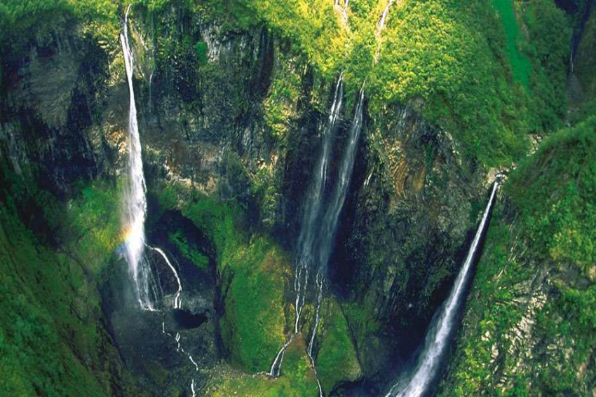
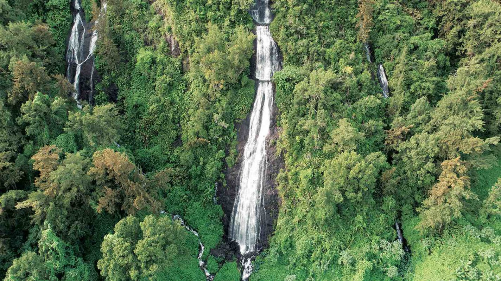
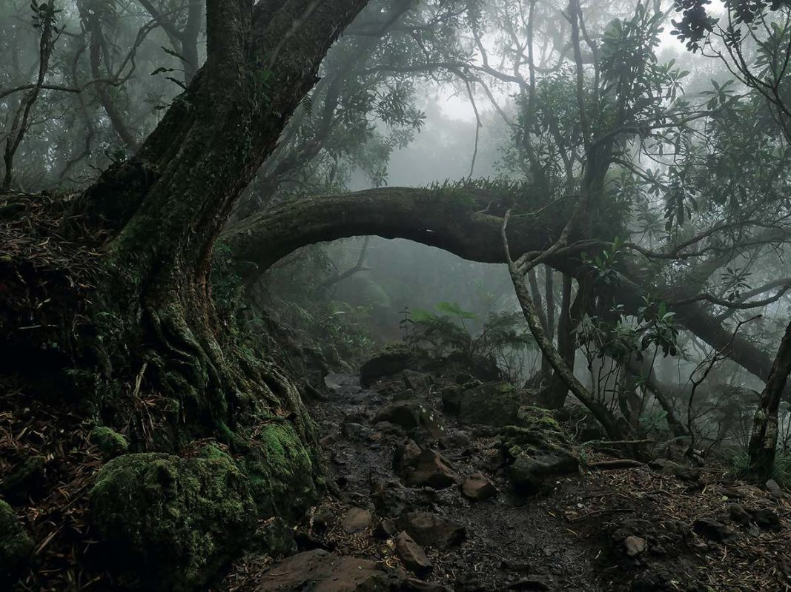

Situé dans la forêt de Bélouve, le Trou de fer est un véritable orifice naturel profond de 300 m, résultat d’une impressionnante dépression géologique du massif du Piton des Neiges. Encerclé par les plateaux de la forêt de Bélouve, de la Plaine des Lianes et du rempart de l’Eperon, il reçoit de nombreux cours d’eau qui forment la rivière du Bras de la Caverne, qui elle-même se jette dans la rivière du Mât.
La cascade du Voile de la Mariée se situe à l’est de l’île de La Réunion, dans le cirque de Salazie, à environ 500 mètres d’altitude. Elle doit son nom à l’effet visuel des nombreuses chutes d’eau qui s’étirent en largeur sur près de 100 mètres le long du rempart séparant le cirque de Salazie du plateau sur lequel se trouve la forêt primaire de Bélouve
La forêt de Bélouve est une forêt primaire (en partie) qui occupe le plateau dominant le rempart sud du cirque de Salazie. Comme sa voisine, la forêt abrite une flore exceptionnellement riche.

Franck Maillot 2021